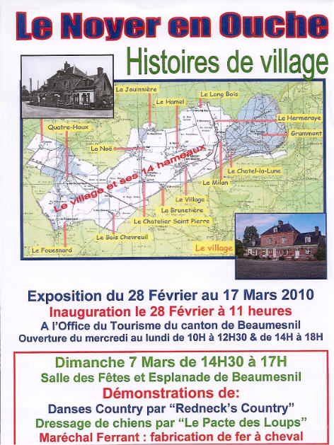

|
Le Centenaire de La Grande Guerre
|
Les Petites Annonces de la Ferme de La Godinière
27410
Le Noyer en Ouche
Tel : 02.32.444.671
dernière mise à jour de cette page : 01.09.2021
Notre adresse web :
http://lagodiniere27.github.io/
Cette page est ouverte à
titre complètement gracieux
pour saisir l'opportunité d'une demande ou d'une recherche particulière.
Consultez également
Le calendrier
ou
Les événements
ou bien encore
Les Autres Fêtes à venir
|
Le Centenaire de La Grande Guerre
|
|
U ne Exposition à voir et ne manquer sous aucun prétexte... :Les Poteries du Châtel la Lune ancienne paroisse du Noyer en Ouche Eure
au Musée des Traditions et Arts Normands RN 31 (direction Rouen - Beauvais ) Tel : 02 35 23 44 70
"Céramique(s) de Haute-Normandie du 7 avril 2012 au 7 janvier 2013 Horaires : www.chateaudemartainville.fr Le Château de Martainville est peu connu par les habitants de notre région, bien sûr, c'est en Seine Maritime, mais situé non loin de Vascœuil, ( il faut compter entre 70 et 80 km d'ici selon la route choisie ), et, comme le nom du musée l'indique, nous y trouvons d'innombrables objets de la vie courante d'une époque pas si lointaine... Les céramiques bien sûr, qu'elles soient décoratives ou pratiques, ustensiles de cuisine, fers à repasser, etc... Les Meubles, armoires et buffets de La Ferrière sur Risle, présentés dans des pièces meublées, cuisine, Salle à manger, laiterie, chambres, etc... Collections de linge, vaisselles, costumes, bijoux, etc...
Les Céramiques du Châtel la Lune sont présentées en bonne place aux côtés de sis autres du département de l'Eure. Vous serez stupéfaits de leur découverte, et pourtant, quand vous êtes à Beaumesnil, dans le village, vous passez près d'un endroit que vous connaissez bien, dont la toiture se pare de deux spécimens : deux épis de faîtage ornent la toiture d'une demeure du XVIIè siècle connue sous le nom de l'Étape Louis XIII. Mais les potiers du Chatel La Lune fabriquaient des ustensiles de la vie courantes : soupières, pots, vases, gourdes, et autres objets décoratifs. Patrick et Françoise Douais, du Noyer en Ouche et membres de l'AMSE ont contribué très largement à cette exposition. Ils présentent l'activité et les objets dans un texte publié dans le catalogue officiel de l'Exposition, avec de superbes photos, en vente 10 euros au Château de Martainville,
Une nouvelle exposition sur les Poteries de l'Eure aux XVIIIè et XIXè siècles se tiendra au Musée de Conches du 6 juin au 27 septembre 2015. Musée de Conches, Arboretum, Rue Paul Guilbaut 27190 Conches Tél : 02.32.37.92.16
Ouvert de juin à septembre du mercredi au dimanche de 14h à 18h. Visites commentées le 1er jeudi du mois ( 2 juillet, 6 août, 3 septembre )
|
|
|
Tous nos locaux et installations sont protégés par
CT.CAM. filiale sécurité du GROUPE CREDIT AGRICOLE
CONTACT DIRECT : N° Azur : 0 810 712 339 |
Le nouveau site site de l'OT de Beaumesnil est en ligne, à consulter sans modération
Renseignements, Téléphoner à l'Office de Tourisme
Le calendrier... Toutes les manifestations sur ce lien :
http://www.tourismebeaumesnil27.fr/index.php/se-divertir/manifestations
|
Une nouvelle page d'histoire en cours :
Après avoir reconstitué le parcours du Caporal Charles Sainturette...
|
INFORMATION LICENCES VENTE de BOISSONS, nouvelle réglementation
|
Le calendrier 2011... Renseignements, Téléphoner à l'Office de Tourisme de Beaumesnil Toutes les manifestations proposées par l'Office de Tourisme du Canton de Beaumesnil ont été retenues dans le programme de l'Eure d'Été en 2011 :
Les Chemins de Buenos Aires Attentats Littéraires à La Godinière Arts et Lettres à Beaumesnil La Fête des Enfants au Village Enchanté des Automates Le Village des Automates La Fête de l'Ane à Gisay la Coudre La Fête de la Moto à La Barre en Ouche
1er Dimanche d'Octobre 2011 - Ferme de La Godinière de 14 h à 18 hATTENTATS LITTERAIRES
Rens :
Office de Tourisme de Beaumesnil
Tél : 02.32.46.45.68
|
|
Mise à l'Honneur des Communes du canton de Beaumesnil à l'Office de Tourisme Pour voir le programme complet : clic...
|

Bosc Renoult en Ouche : Une vidéo présente la commune : Bosc-Renoult en Ouche : cliquer sur ce lien
et à Thevray encore : http://ouallons-thevray.blogspot.com/
Le Fidelaire : http://www.lefidelaire.fr/
Le site du Conseil Général de l'Eure :
www.eureenligne.fr
Champagne : Chambres d'Hôtes. Dormir dans le vendangeoir de Nadine...
Alain et Nadine DAVID :
2, Rue de Boursois 51480
BOURSAULT
Tel :
03.26.58.41.76 Fax : 03.26.51.09.96
Port :
06.89.27.03.00
champagne.a.david@orange.fr
www.alain-david-fils.com
A voir, le blog de Evelyne, Camping-cariste France-Passion, de passage à La
Godinière :
http://champabreiz.canalblog.com/ , avec son mari Francis, elle avait pour
objectif de visiter le département de l'Eure pendant une semaine... que du
plaisir !!!
|
Matériel Cidricole à céder - ( liste révisée mars 2016 )
René LESUR – La Godinière – 27410 Le Noyer en Ouche
Suite à cessation d’activité pour raison de Retraite, et n’ayant pas trouvé de repreneur pour l’activité de transformation cidricole, je mets en vente tout mon matériel.
Parts sociales CUMA Cidricole Haute Normandie, Filtre, Centrifugeuse, groupe d’embouteillage
Palettes VMF, environ 20, état neuf, toujours gardées à l’abri ----------------------------------------------------------------------------------------------------------------------------------------------
Fûts à Calvados, barriques bordelaises très bon état, vides de Calvados
Caisses Leban, stockage de 532 bouteilles, qualité extra, toujours gardées à l’abri Bouteilles à cidre 75 cl et 37,5 cl occasion, lavées et à laver ------------------------------------------------------------------------------------------------------------------------------------------------------- 1 Benne (6tonnes de pommes) 1 Benne (4 tonnes de pommes) 1 épandeur état impeccable de marche pour récolte de pommes ou évacuation marc (ou autre) CU 7 Tonnes
Je suis à votre disposition pour tout renseignement complémentaire, prix, conditions… Par courrier postal, René Lesur, La Godinière, 27410 Le Noyer en Ouche Téléphone : 02.32.44.46.71 (répondeur en cas d’absence) E-mail : Pour nous écrire : cliquez |
|
Christophe Chomant Éditeur, 37 rue des Frères Nicolle, 76000 ROUEN 02.35.07.71.24. + 06.20.46.52.18. christophe.chomant@wanadoo.fr
(ou « catalogue chomant » dans
Google)
Christophe Chomant, éditeur à
Rouen, |
GOUTTIERES Voir Historique : cliquez
Le site de l'office du tourisme de Beaumesnil :
www.tourismebeaumesnil27.fr
Le site Internet de la 3CB
est en ligne :
www.cc-beaumesnil.com
Le site internet de Thevray :
http://thevray.free.fr
Le site internet de La Barre en Ouche : www.labarreenouche.fr
Ma messagerie est protégée par Avast
|
Retour
Les Produits
ou
Accueil ou
Plan du
site |
René LESUR - La Godinière
27410 LE NOYER EN OUCHE
Tél. : 02 32 444 671
Conception et Réalisation : René Lesur